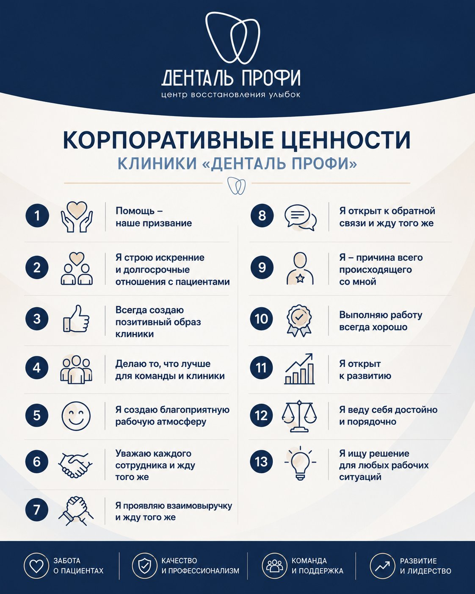

ФИЛОСОФИЯ СОТРУДНИКА ДЕНТАЛЬ ПРОФИМышление, ценности и принципы работы врача
Введение
Этот документ описывает мышление и принципы работы врача Денталь Профи.
Мы считаем, что сильный врач начинается не с навыков и не с дипломов. Сильный врач начинается с ценностей, отношения к людям, отношения к работе и способности постоянно развиваться.
Именно поэтому перед изучением клинических протоколов, диагностики, гнатологии и планирования лечения каждый врач должен понять философию, на которой построена Денталь Профи.
Помощь – наше призвание
Суть: Врач – это прежде всего тот, кто избавляет от боли и страданий. Помощь должна быть искренней и качественной.
Пациент приходит к нам с болью, дискомфортом, страхами. Наша задача – помочь.
Иногда помощь заключается в сложном лечении. Иногда достаточно совета. Иногда нужно быстро устранить боль. Иногда помочь человеку разобраться в ситуации.
Мы стремимся помогать искренне. Именно это формирует доверие, репутацию и уважение пациентов.
Как это проявляется на практике:
-Если у пациента острая боль, откололся кусок зуба, что-то царапает – помогите немедленно, даже если проблема не строго по вашей специализации.
-При необходимости окажите первую помощь, дайте совет, разберитесь в сложной ситуации, которую не смогли решить другие или просто направьте к другому специалисту, если проблема не в вашей компетенции
-В экстренных случаях действуйте быстро и иногда бесплатно (если это не противоречит регламенту).
-Помогайте тем, кто пришел от других врачей.
Запомните: искренняя помощь напрямую влияет на ваш заработок и отношение пациентов.
Выстраивайте долгосрочные отношения с пациентами
Суть: Пациент должен остаться с нами на всю жизнь (LTV – lifetime value). Отношения строятся на доверии, правде и заботе.
Каждое решение должно приниматься с мыслью: что бы я сделал(а) для себя или для своих близких.
Мы говорим правду, не назначаем лишнего лечения, выполняем обещания и стремимся стать для пациента надежным врачом на долгие годы.
Как это делать:
- Относитесь к пациенту как к близкому человеку. Задавайте себе вопрос: «Что бы я сделал(а) для себя, мамы, брата?»
- Говорите правду о лечении и финансах. Не завышайте, не берите лишнего.
- Не обманывайте ожиданий и качественно выполняйте работу.
- Искренность и уважение помогают даже в конфликтных ситуациях.
Результат: пациент доверяет вам, не уходит к другим врачам, рекомендует клинику.
Создавайте позитивный образ клиники
Суть: В глазах пациента клиника должна работать как швейцарские часы – четко, чисто, профессионально.
Пациент должен видеть сильную, организованную и профессиональную команду.
Внутренние сложности решаются внутри коллектива. Мы помним, что важно доверие пациентов к команде и не выносим внутренние проблемы наружу.
Наша задача – создавать ощущение порядка, слаженности, надежности и высокого уровня сервиса.
Правила:
- Не выносите «мусор из избы» при пациенте. Если администратор ошибся или ассистент что-то не так сделал – разбирайтесь позже, за закрытыми дверями.
- Не обсуждайте конфликты, пациентов и коллег при других в одном помещении, одна услышанная фраза может испортить впечатление.
- Поддерживайте чистоту в туалетах, кабинетах, общих помещениях. Если чего-то не хватает – сами решите или сообщите.
- Пациент должен уходить с хорошим «послевкусием» и впечатлением, что у нас всё отлажено.
Делайте то, что лучше для команды и клиники
Суть: Один в поле не воин. Современная стоматология – это командная работа.
Терапевт, хирург, ортопед, ортодонт, ассистент, координатор, администратор – все работают на общий результат.
Сильный сотрудник не только хорошо выполняет свою работу, но и помогает другим достигать результата, а также заботится о компании, которая дает ему возможность зарабатывать, содержать семью, расти и реализовываться.
Ваши действия:
- Будьте заинтересованы в записи к другим врачам: делайте качественные фото, заполняйте первичную консультацию, направляйте по плану лечения, передавайте всю информацию координатору.
- Помогайте коллегам: снять швы, подклеить брекет, решить сложную ситуацию, поправить завышенную пломбу, заполировать и т.д.
- Выходите на замену, подстраховывайте, проявляйте инициативу, выручайте своих руководителей.
- Думайте о благосостоянии клиники и команды – тогда ваше благосостояние тоже будет расти.
Важно: ваш вклад в команду будет оценен ровно настолько, насколько вы сами вкладываетесь.
Создавайте благоприятную рабочую атмосферу
Суть: Никаких скандалов, интриг и сплетен. У нас принято решать вопросы конструктивно.
Если вы эмоционируете, кричите и не слышите другого человека, вероятность найти решение резко снижается. Сначала пойми, потом высказывай.
Сплетни, обсуждения коллег или руководства за спиной, выяснения отношений – запрещены вне рабочих моментов. Токсичность разрушает коллектив. Лучше смейтесь и улыбайтесь.
Конфликт с пациентом: ваша задача – не усугубить, а сгладить, найти компромисс. Если не получается без эмоций – немедленно передайте управляющему или главврачу.
Если пациент вам не подходит – расставайтесь без скандала, конструктивно и с пониманием, что не все люди подходят друг другу.
Запомните: Мы любим людей с позитивной энергией. Токсичные люди рано или поздно уйдут.
Уважайте каждого сотрудника и требуйте уважения к себе
Суть: Уважение ко всем – от уборщицы до главврача. Каждый человек ценен для компании.
Мы уважаем каждого человека независимо от должности и опыта.
Уважение создает доверие. Доверие создает сильную команду.
Мы помогаем друг другу, подстраховываем коллег, делимся знаниями и опытом.
Как это делать:
- Обучайте новых ассистентов, делайте вклад в них.
- Не обесценивайте, относитесь с уважением к каждому сотруднику. Ваша работа зависит от каждого члена команды.
- Руководство также обязано уважать вас. Если вы уважаете других – требуйте уважения и к себе.
- Напоминайте об этом другим, если чувствуете себя некомфортно, обесцененным. Из взаимоуважения рождается взаимопонимание и слаженность.
Важно: Приходить на работу, где тебя уважают – наше большое желание.
Проявляйте взаимовыручку и напоминайте другим об этом
Суть: Помогайте коллегам вне зависимости от должности, даже если это чуть выше ваших прямых обязанностей.
Примеры:
- Ассистент не успевает – протрите кресло сами, подготовьте инструмент.
- У коллеги сложный пациент – подстрахуйте, посоветуйте.
- Если у вас просят помощи – помогите. Если вы просите – вам должны помочь.
Шкала ценности сотрудника:
Базовый уровень – выполняет только свои обязанности, иногда требуется помощь.
Хорошо – сам отлично делает свою работу.
Высший уровень – Выполняет свою работу отлично и помогает другим, на него можно положиться. Даже если дело не касается работы.
Важно: Чем больше вы помогаете, тем выше ваша ценность как сотрудника и человека, а ваша репутация откроет двери для новых возможностей.
Будьте открыты к обратной связи и напоминайте об этом другим
Суть: Разбор ошибок и конструктивная обратная связь помогают расти.
Рост невозможен без обратной связи.
Каждый из нас совершает ошибки. Важно не избегать замечаний, а использовать их для развития.
Мы спокойно относимся к конструктивной критике и сами готовы давать обратную связь для улучшения своей работы, клиники и команды.
Как относиться:
- Если вам указывают на нарушение протоколов, ценностей, регламентов – воспринимайте адекватно, поборите свое «эго». Без эмоций требуйте конструктивности, конкретности, задавайте уточняющие вопросы.
- Нам всем хочется почувствовать свою важность, и «корона может вырасти» у любого – это нормально. Важна осознанность и понимание, что это тормоз для человека.
Вы тоже имеете полное право давать конструктивную обратную связь руководству, коллегам. Мы понимаем важность этого инструмента развития.
Важно: Развитие клиники – развитие команды. Без обратной связи роста не будет.
Помните, вы – главная причина вашей жизни
Суть: Профессионал берет ответственность на себя. Если что-то не складывается – ищи причину в себе, своих действиях или бездействиях.
Одна из ключевых ценностей Денталь Профи.
Профессионал ищет причины внутри себя и способы повлиять на ситуацию.
Если что-то не получается, мы задаем вопрос: что я могу сделать, чтобы получить другой результат.
Именно такая позиция формирует сильных специалистов и лидеров.
Что делать:
- Осознайте, что ваши мысли, действия или их отсутствие влияют на результат.
- Нет нужного навыка – учитесь, изучайте, советуйтесь с коллегами. Неправильные действия или бездействие приводят к другому результату, но он тоже ваш.
- Не стесняйтесь, совладайте со своим эго или страхами, просите помощи, подключите других специалистов – все это приблизит вас к большим результатам.
- Развивайте и hard skills (медицинские навыки), и soft skills (коммуникация, конфликтология, речь, продажи).
Важно: Стать «причинностью» – большое достижение не только в работе, но и в жизни.
Выполняйте работу всегда хорошо, даже если это приведет к дополнительным потерям времени и денег.
Суть: Научиться делать качественно, с первого раза, без исправлений и лишних расходов. Но развитие всегда требует каких-то вложений.
Качественная работа врача состоит из трех элементов:
- Работа выполнена качественно и в полном объеме
- Пациент остался доволен визитом
- Нет проблем, лишних расходов, выполнено все по регламенту.
Репутация формируется ежедневно через качество каждой детали. Но не всегда получается с первого раза. Лучше переделать, искренне поговорить с пациентом или коллегой, исправить ситуацию и выдать хороший результат
Почему это важно:
- Репутация среди коллег – главный рычаг вашего роста. Никто не хочет работать с плохим сотрудником.
- Плохо сделанная или недоделанная работа накапливается и ведет к эмоциональному выгоранию.
- Хорошая работа – залог морального духа и удовольствия от работы.
Важно: только стабильный качественный результат вашей работы даст толчок к вашему развитию и карьере, а значит к процветанию компании.
Будьте открыты к развитию.
Суть: Никогда не останавливаться. Развивайте и профессиональные навыки, и личностные.
Важно развивать hard skills и soft skills, коммуникацию, речь, управление конфликтами, лидерство, внешний вид, здоровье, образ жизни и мышление. Развитие не заканчивается никогда.
Направления развития:
Hard skills: терапия + ортопедия, терапия + хирургия, гнатология, пародонтология. Чем больше вы умеете, тем выше ваша профессиональная ценность.
Soft skills: переговоры, ораторское искусство, фотография, конфликтология, продажи, речь.
Внешность и здоровье: ваш вид, гигиена, даже состояние зубов влияют на доверие пациентов. «Сапожник без сапог» – плохая реклама.
Хобби и полноценная жизнь: это напрямую влияет на эффективность на работе.
Впереди вся жизнь и в ней всегда можно улучшаться. См. «7 ресурсов человека».
Важно: Сила компании в команде. Профессиональное и личностное развитие каждого члена команды влияет на уровень компании в целом.
Ведите себя достойно и порядочно
Суть: Без эмоций, без ругани, без кражи и обмана.
Достойно: В конфликте – спокойно, конструктивно, иногда позитивно. Не опускаться до ругани и оскорблений. Ведите себя достойно, уважайте пациентов и коллег даже в сложных ситуациях.
Порядочно: Честные финансовые отношения. Не обманывать пациентов и коллег. Любые формы присвоения имущества компании или коллег несовместимы с работой в Денталь Профи.
В нашей команде честные, добрые и хорошие люди и мы ищем подобных себе.
Мы сохраняем уважение даже в сложных ситуациях.
Важно: Честность, порядочность, соблюдение договоренностей и ответственное отношение к финансам являются обязательной частью культуры Денталь Профи.
Ищите решение для любых рабочих ситуаций
Суть: Умение самостоятельно решать сложные задачи повышает вашу ценность.
Решение вместо оправданий: мы ищем решения, а не виноватых.
Чем больше задач человек способен решать самостоятельно, тем выше его профессиональная ценность. Поэтому любая сложная ситуация может стать источником роста. Старайтесь сначала решить задачу сами.
Не бойтесь сложных ситуаций. Каждая решенная сложная задача развивает ваши навыки.
Если не получается или есть сомнения – просите помощь (управляющий состав, коллеги), но всегда приходите со своим решением (вдруг оно самое правильное).
Важно: Каждая самостоятельно решенная задача дает наибольший эффект, если вам помогли или подсказали решение.
Типичные ошибки новых или молодых специалистов:
- Искать виноватых вместо решений
- Бояться обратной связи
- Работать только ради денег
- Игнорировать командную работу
- Недооценивать важность репутации
- Переставать развиваться после первых успехов
- Бояться и уходить от ответственности
Заключение
Мы нацелены на успех, развитие, позитив и гармонию – не только на работе, но и в жизни. Эти 13 ценностей – не просто слова, а практическое руководство к действию. Чем лучше вы их примете, тем легче вам будет в коллективе, тем быстрее вырастет ваша репутация, доход и удовлетворение от работы.
Формула сотрудника Денталь Профи:
Помощь + Ответственность + Развитие + Командность + Качество = Сильный сотрудник.
Эти ценности являются фундаментом корпоративной культуры Денталь Профи и обязательны для всех сотрудников компании.